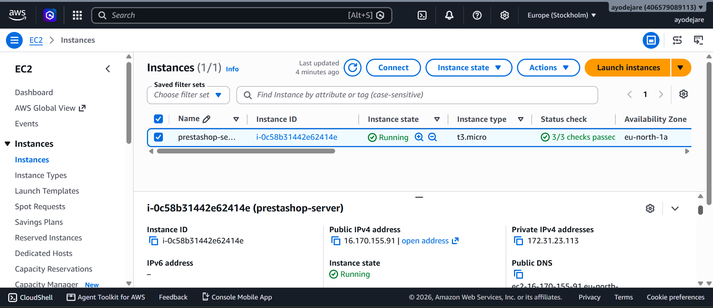
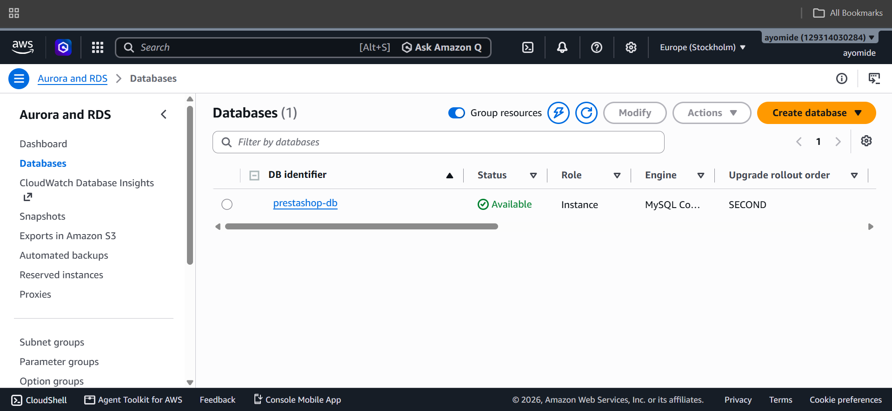
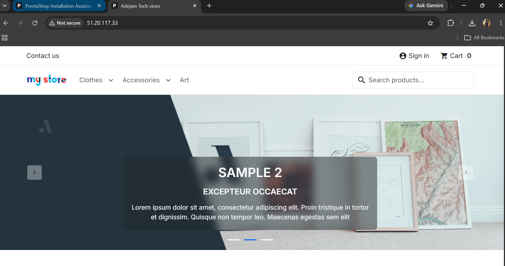

PROJECT 03
PrestaShop Deployment on AWS
A practical cloud infrastructure deployment using Amazon EC2, Ubuntu, Apache and Amazon RDS to host a publicly accessible PrestaShop application.
Project Overview
This project involved deploying the open-source PrestaShop e-commerce platform on an Amazon EC2 instance running Ubuntu 24.04 LTS. Instead of placing the database on the same server as the application, Amazon RDS was used to host a separate MySQL database.
AWS Architecture
Amazon EC2
An Ubuntu 24.04 LTS EC2 instance was used to host the PrestaShop application and Apache web server.
Apache
Apache was configured as the web server responsible for serving the PrestaShop application.
Amazon RDS
A separate Amazon RDS MySQL database was created to store the application's data.
PrestaShop
PrestaShop 9.1.4 was installed on the EC2 instance and configured to communicate with the remote RDS database.
Deployment Workflow
Create EC2 instance
Configure Ubuntu & Apache
Create RDS MySQL
Configure database connectivity
Deploy PrestaShop
Database Connectivity
The EC2 application server was configured to communicate with the separate Amazon RDS MySQL database. The MySQL client was used to verify that the EC2 server could successfully connect to the remote database.
Security & Infrastructure Considerations
Network Access Control
The EC2 instance was protected using AWS security group rules to control which network traffic could reach the application server. Only the required services were exposed for administration and web access.
Application & Database Separation
The PrestaShop application and MySQL database were deployed separately. EC2 handled the application while Amazon RDS managed the database, reducing dependency on a single server.
Database Access
The EC2 application server was configured to communicate with the RDS MySQL database through the required database connection, allowing the application to use the remote database without hosting MySQL locally.
Linux Server Administration
The application server was managed using Ubuntu 24.04 LTS, providing practical experience with Linux administration, Apache configuration, package installation and cloud-based server management.
Deployment Result
Publicly Accessible Store
After completing the installation and database configuration, the PrestaShop application became publicly accessible through the EC2 instance's public IPv4 address.
Deployment Evidence

EC2 Application Server
An Ubuntu 24.04 LTS Amazon EC2 instance was provisioned to host the PrestaShop application and Apache web server.

RDS MySQL Database
A separate Amazon RDS MySQL database was configured to store the PrestaShop application's data independently from the EC2 application server.

Deployed PrestaShop Store
The completed PrestaShop installation was successfully deployed and made publicly accessible through the EC2 instance's public IPv4 address.
What I Learned
This project strengthened my understanding of deploying web applications on AWS and managing Linux-based cloud infrastructure.
I gained practical experience working with EC2, Ubuntu, Apache, Amazon RDS and MySQL, including configuring communication between an application server and a separate database.
The project also reinforced the importance of separating application and database infrastructure when designing cloud environments.